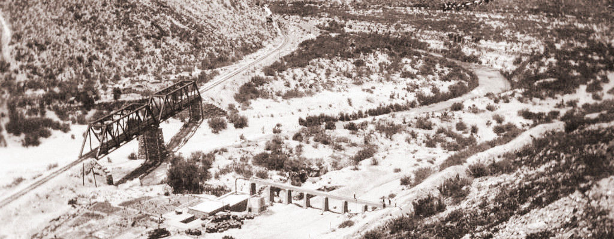
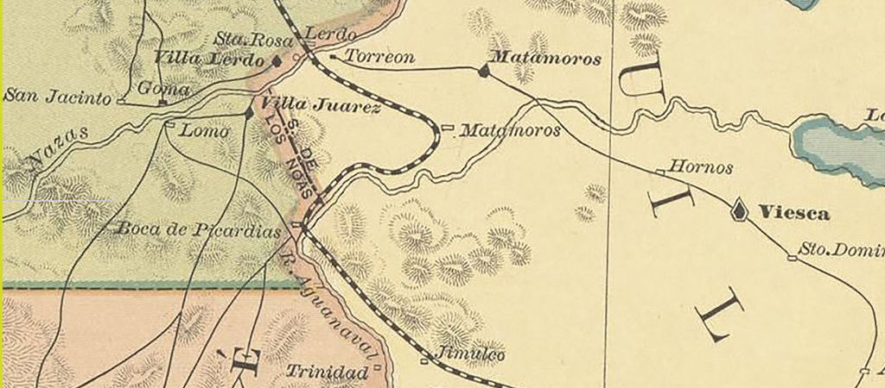
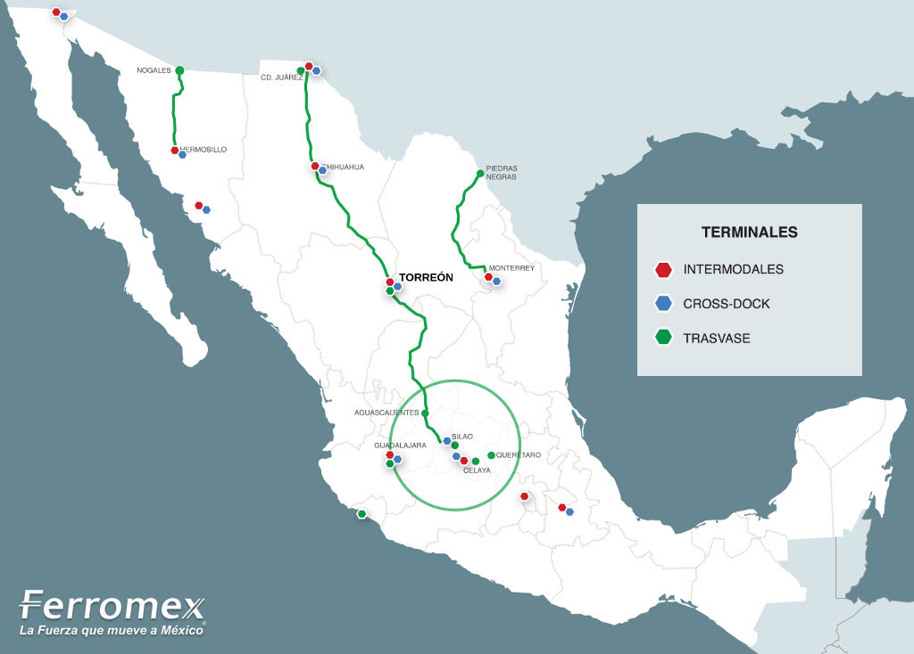

La Reserva Ecológica Municipal Sierra y Cañón de Jimulco cuenta con una superficie de 60,458.26 hectáreas y corresponde el 44.7% del territorio del Municipio de Torreón. Es la reserva ecológica municipal más grande de México.
En la publicación anterior tratamos específicamente temas de la Reserva. En esta entrega, para ampliar el contexto, abordaremos su historia, su gente y cómo ha sido el paso del ferrocarril por Jimulco un componente determinante para el progreso de La Comarca Lagunera.
Los orígenes de Jimulco
La muy antigua Hacienda de Jimulco fue construida por misioneros jesuitas. Se reconoce a Fray Agustín de Espinoza como el poseedor de las Haciendas Santa Ana de los Hornos y Jimulco.
Desde 1760 les quitaron a los jesuitas las tierras de la Real Hacienda de Jimulco y pasaron a ser propiedad de Don David Winfield, quien las vendió a Juan Gaidor; los cultivos de entonces eran escasos y se hacían con el agua que salía de los manantiales.
Amador Cárdenas Ramón, nacido en Monclova, decidió establecerse en la Hacienda de Jimulco. En 1880 nació su hijo menor y le pidió a Juan Gaidor que lo bautizara; reafirmando con ello su amistad y confianza. Al fallecer Juan Gaidor dejó en herencia sus propiedades a su ahijado. Fue así como las tierras de Jimulco pasaron a ser propiedad de Amador Cárdenas, siendo el principal actor en el desarrollo histórico de la región.
El paso del Ferrocarril
Al término del porfiriato había más de veinte mil kilómetros de vías férreas construidas en México. La Comarca Lagunera fue el punto ideal para ser un nodo ferroviario, por dos buenas razones, ser un gran productor de algodón y por la topografía plana. Si se hubiera trazado la vía por la capital de Durango, la serranía hubiera elevado mucho los costos de construcción.
Don Amador Cárdenas vendió parte de sus tierras para se construyera la vía del ferrocarril. La construcción quedó a cargo de una empresa norteamericana; quedando establecida la estación Otto y talleres de servicio en Jimulco. En 1883 las vías del Ferrocarril Central Mexicano atravesaron la región lagunera, en donde se construyeron las estaciones de Jimulco, Torreón y Lerdo.
Mapa de 1885 (fragmento)

Don Amador, quien tenía una fuerte amistad con Don Porfirio, consiguió que su amigo el Presidente programara una escala en Jimulco en el viaje rumbo a Ciudad Juarez, a bordo del tren presidencial y en esta importante vía.
En 1909 el Presidente Porfirio Díaz visitó la "Casa Grande", propiedad de Don Amador Cárdenas en La Flor, Jimulco. Se dice que la recepción fue en grande: desde el ferrocarril presidencial hasta la Casa Grande se colocó una alfombra y un arco hecho de pacas de algodón para proteger del Sol al Presidente.
Mapa Reserva Ecológica Municipal Sierra y Cañón de Jimulco y vías férreas
¿Qué hubiera ocurrido si la ruta del Ferrocarril Central Mexicano hubiera pasado por Durango capital en vez de Torreón? En aquel entonces había mucho interés porque así se hiciera; puesto que la ciudad de Durango es la capital del estado, tiene industria minera y tres veces más población (en aquellos años) que La Comarca Lagunera. Tal vez Torreón continuaría sólo con su producción agrícola y con poca diversidad industrial, crecimiento económico y poblacional que hemos tenido en más de 110 años.
Se dice que para que la visita de Don Porfirio Díaz a Jimulco se documentara como "una visita a Torreón," se ordenó que Jimulco formara parte de éste Municipio; originando que el territorio municipal quedara formado por dos polígonos separados. Sea cierto o no, la histórica visita fue el impulso clave para el desarrollo de La Laguna.
Posteriormente, la Comarca Lagunera tuvo su gran transformación urbana con el Ferrocarril Internacional Mexicano, comunicando Torreón con Monterrey y Tampico. Para 1910 se consolidaron Gómez Palacio y Torreón como centros reguladores; siendo Torreón quien tomó el papel de ciudad principal de la región.
Ferromex: Rutas Férreas con viajes regulares a EE.UU.

Hoy en día vemos pasar trenes con vagones especiales para llevar automóviles. La industria automotriz que se encuentra en el centro del país fabrica vehículos para exportación. Los viajes Cross Border Silao - Cd. Juárez son de lunes a viernes según Ferromex. Torreón está muy activo en este medio de transporte, por lo que no deja de ser considerado como una ciudad competitiva para la inversión extranjera.
La Población de Jimulco
En contraste, Jimulco es relativamente poco poblado. Se estiman más de cuatro mil habitantes en las principales poblaciones de Jimulco. La mayoría de las actividades económicas son relacionadas con la agricultura, siendo la siembra y recolección de orégano una de las más importantes.
Sus habitantes se distinguen por el amor a su tierra y la hospitalidad que brindan a los migrantes. Es tan grande su generosidad que ofrecen techo, alimentos y ropa a quienes arriesgan su vida abordando el tren para viajar a la frontera y buscar la oportunidad de cruzarla.
La forma de ser de la gente de Jimulco es el resultado de la combinación del bello entorno natural entre el Río Aguanaval y la sierra, el paso del ferrocarril y los extranjeros que llegaron desde la colonización.
Datos del INEGI Censo de Población y Vivienda 2010
| Localidad | Clave Localidad | Población Total |
|---|---|---|
| Juan Eugenio | 0165 | 1,821 |
| Jalisco | 0162 | 685 |
| La Trinidad | 0199 | 322 |
| Jimulco | 0163 | 422 |
| La Flor de Jimulco | 0158 | 695 |
| Doce de Diciembre | 0155 | 47 |
Descargar
- Mapa Reserva Ecológica Municipal Sierra y Cañón de Jimulco y vías férreas: mapa-remsycj-vias-ferreas-usgs.jpg 1.6 MB
{kind=link}
Referencias
- Ángel González Morales - El Ferrocarril en La Comarca Lagunera - UAM8147.pdf 4.6 MB
- El Siglo de Torreón - La muy antigua Hacienda de Jimulco y sus posteriores y valiosas anexas - parte 1
- El Siglo de Torreón - La muy antigua Hacienda de Jimulco y sus posteriores y valiosas anexas - parte 2
- El Siglo de Torreón - La Comarca Lagunera en el Porfiriato y el nacimiento de Gómez Palacio y Torreón
- Francisco Rodríguez Lozano - Jimulco: Paso de migrantes
- Ferromex ¿A dónde lo movemos?
- INEGI Censo 2010 - Microdatos Coahuila de Zaragoza
- U.S. Geological Survey - Earth Explorer - Landsat 8 / 2017-01-19